| Разложение силы на составляющие | פירוק כוח לרכיבים |
| Чтобы исследовать действие наклонной силы на тело, её раскладывают на две взаимно перпендикулярные составляющие. Так исключается взаимное влияние одной оси на другую!!! | כדי לבחון את השפעתו של כוח נטוי על גוף, נפרקו לשני רכיבים ישרי זווית. כך נמנע מהשפעה הדדית של ציר אחד על משנהו!!! |
| Рис. 4 — Разложение силы на две взаимно перпендикулярные составляющие | איור 4 - פירוק כוח לשני רכיבים ישרי זווית |
| Fx = F ∙ cos α° (горизонтальная составляющая) | Fx = F ∙ cos α° (רכיב אופקי) |
| Fy = F ∙ cos α° (вертикальная составляющая) | Fy = F ∙ cos α° (רכיב אנכי) |
⚠ в книге: Fy = F ∙cos α° (רכיב אנכי) → верно: Fy = F ∙ sin α° (רכיב אנכי)Вертикальная составляющая — катет, противолежащий углу α, поэтому Fy = F·sin α. Так она и записана выше на этой же странице (формула a97002:p7:f02), так же следует из рис. 4. ждёт подтверждения владельца | |
| Правило знаков: | כלל הסימנים: |
| Составляющая силы считается «+» (положительной), когда сила направлена по направлению оси. | רכיב כוח יוגדר "+" (חיובי) כאשר הכוח מכוון עם כיוון הציר. |
| Составляющая силы считается «−» (отрицательной), когда сила направлена против направления оси. | רכיב כוח יוגדר "−" (שלילי) כאשר הכוח מכוון נגד כיוון הציר. |
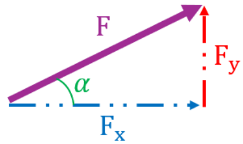
①②③④| Передаточное отношение | יחס תמסורת |
| Составляющие мощности (крутящий момент Mt, частоту вращения n_rot) можно изменять, меняя диаметры колёс (шкивов) передачи. | ניתן לשנות את מרכיבי ההספק (מומנט הסיבוב – Mt, מהירות הסיבוב – n_rot) על ידי שינוי קטרי גלגלי הממסרת. |
| • Понижающая передача (reducer): малый ведущий шкив и большой ведомый шкив уменьшают частоту вращения и увеличивают крутящий момент, передаваемый потребителю. | • תמסורת מפחיתה (reducer) – שימוש בגלגל מניע קטן וגלגל מונע גדול מפחית את מהירות הסיבוב ומגדיל את מומנט הסיבוב הנמסר לצרכן. |
| • Повышающая передача (multiplier): большой ведущий шкив и малый ведомый шкив увеличивают частоту вращения и уменьшают крутящий момент, передаваемый потребителю. | • תמסורת מגבירה (multiplier) – שימוש בגלגל מניע גדול וגלגל מונע קטן מגדיל את מהירות הסיבוב ומקטין את מומנט הסיבוב המועבר לצרכן. |
| Рис. 79 — Ременная передача | איור 79 - תמסורת רצועה |
| Длина ремня | אורך רצועה |
| Рис. 80 — Основные размеры | איור 80 - מידות יסוד |
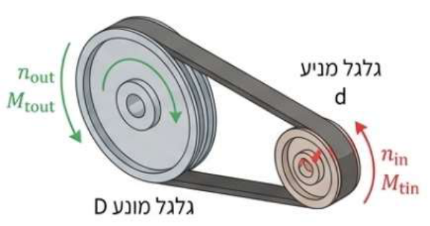
①②③④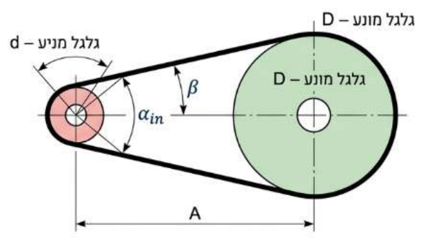
①②③④⑤| нет перевода | נתוני מסבי גלילה )(חלקיים |
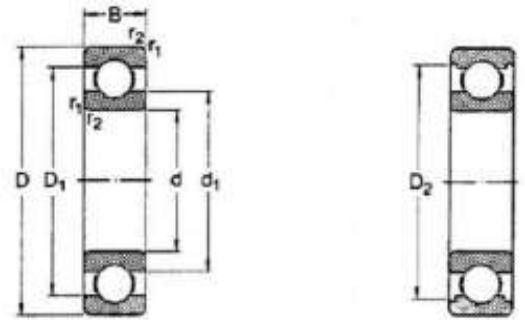
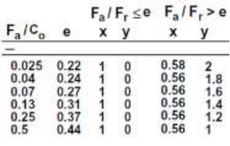
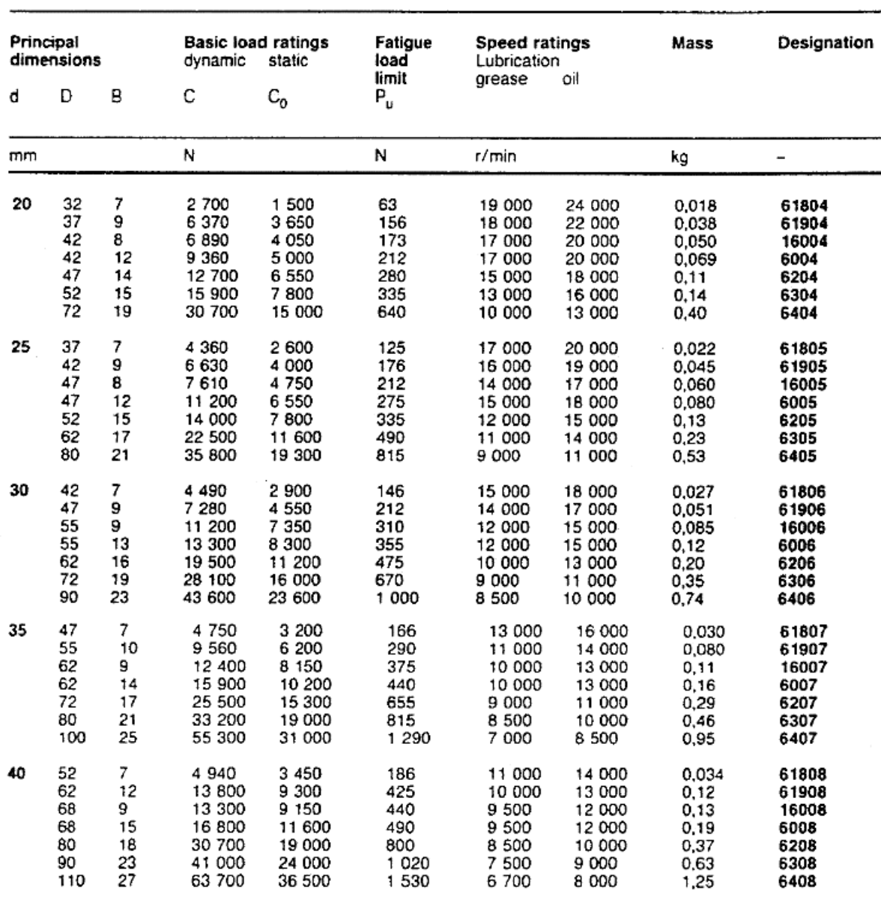
| Fa/C0 | e | при Fa/Fr ≤ e: x, y | при Fa/Fr > e: x, y | ||
| 0.025 | 0.22 | 1 | 0 | 0.58 | 2 |
| 0.04 | 0.24 | 1 | 0 | 0.56 | 1.8 |
| нет перевода | 'נספח א |
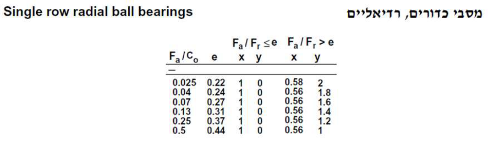
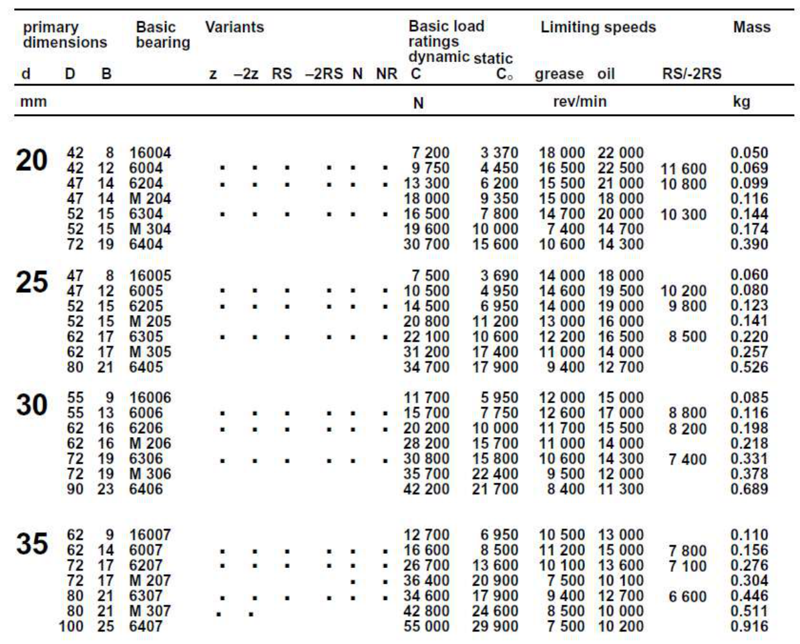
| нет перевода | 2 |
| нет перевода | בממסרת גלגלי שיניים ישרות בעלת יחס תמסורת𝑖= 1: 3 מסתובב המנוע במהירות,1500 rpm גל.AB נתמך על- ידי מסבים בנקודותA ו-B., כמתואר באיור לשאלה נתונים: |
| нет перевода | מקדם תנאי עבודה במסבים1.5 מסב כוח רדיאלי כוח צירי |
| нет перевода | דרוש אורך חיים של המסבים בשעות עבודה.: |
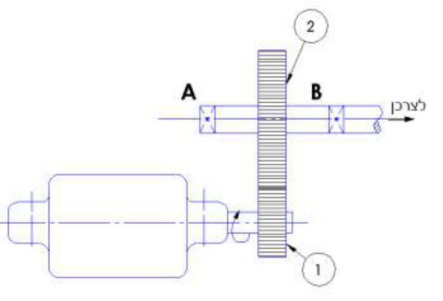
2200 (найдено ядром)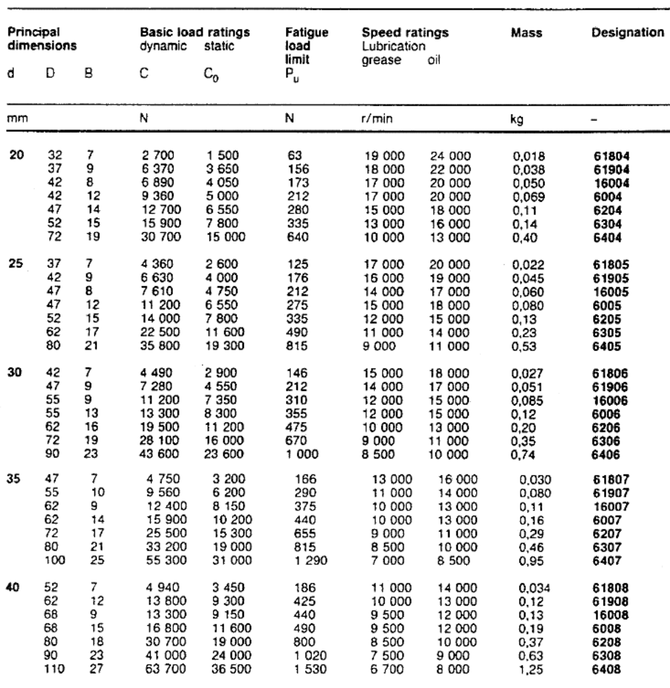
| нет перевода | פתרון2 |
| нет перевода | 1) קביעת מקדמים |
| нет перевода | • מטבלת יצרן המסב מצאו לפי קוטר גל ומק"ט מסב דרגת כושר סטטי– C0. |
| нет перевода | • חשבו יחס |
| нет перевода | • בהתאם ליחס שחושב בחרו בערך גבולי– e שווה או גדול מהיחס שחושב. |
| нет перевода | • חשבו יחס |
| нет перевода | • קביעת מקדמים |
| нет перевода | 2) כוח שקול הפועל על המסב |
| нет перевода | 3) מקדם תנאי עבודה– עומס ,דינמי𝐟𝐖 |
| нет перевода | 4) קביעת מקדם טמפרטורה– 𝐟𝐭 |
| нет перевода | סבולת מידה |
| нет перевода | רכיבי מכונות חייבים להיות ברי הרכבה והחלפה ללא עיבוד חוזר ותלות יצרן ,לקבלת חליפיות מלאה יש צורך. לייצר מוצרים זהים במידותיהם . אין אפשרות לייצר חלקים בדיוק״מוחלט״ ובדרך כלל גם אין צורך לעשות זאת., כדי לאפשר חליפיות חלקים זה בזה בלי עיבוד נוסף, קובעים את מידות הדיוק בעזרת סבולות. |
| нет перевода | איור 260 - הגדרות יסוד ת"י622 |
| нет перевода | )מידה נומינלית (מידה בסיסית או מוצא– מידה נקובההרשומה בסרטוט ואליה מתייחסת הסיבולת. |
| нет перевода | גבול עליון – המידה הגדולה ביותר המותרת למידה הנקובה. |
| нет перевода | גבולתחתון – המידה הקטנה ביותר המותרת למידה הנקובה. )סבולת (סטייה – ההפרש בין המידה המותרת הגדולה ביותר למידה המותרת הקטנה ביותר. |
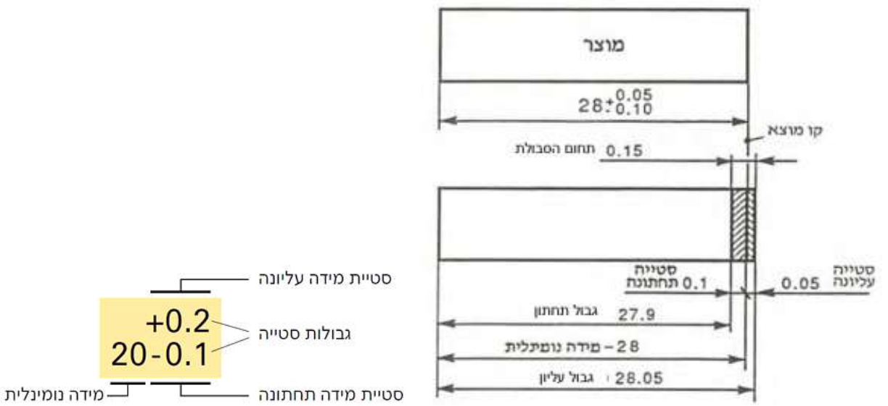